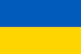

 Українська кухня
Про Колумбію
Україна — держава, розташована у Східній Європі, охоплює південний захід Східноєвропейської рівнини, частину Східних Карпат і Кримські гори. Межує з Румунією і Молдовою на південному заході, з Угорщиною, Словаччиною та Польщею на заході, з білоруссю на півночі та з росією на сході й північному сході.